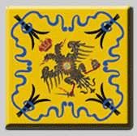

GIALLO !
Tratto dal periodico della Nobil Contrada dell'Aquila "Il Lampione di Costa Larga"
articolo di Valentina Nepi
Giallo è il colore della nostra bandiera e
giallo è uno dei colori di Venere, la dea della
Bellezza.
È anche un colore molto speciale: è
sicuramente quello a cui da sempre l’Uomo di
ogni civiltà e di ogni tempo ha dato significati
importanti e quindi non è un caso che il
Giallo (con la G maiuscola) sia anche il colore
dominante della Nobile Contrada dell’Aquila!
È un colore che ha grande personalità
e che, a prescindere che piaccia o meno, non
può comunque lasciare indifferenti, in nessuna maniera.
Innanzitutto, come già saprà chi
si occupa di pittura, è uno dei tre colori primari
o fondamentali (insieme al blu e
rosso... ma questa è una storia brutta e triste
e non la vogliamo rammentare), cioè è un
colore che non può essere generato con gli
altri pigmenti.
È un colore caldo (al contrario
per esempio del blu che invece è freddo) e,
più del bianco, è il più simile alla luce pura.
Nella simbologia dei colori rappresenta la
radiosità, la sensazione di espansione, il
movimento, la condizione di libertà, l’idealismo
e l’azione. In cromoterapia (la scienza
che cura le malattie attraverso l’uso dei colori,
partendo dall’assunto che quest’ultimi
influenzino lo stato d’animo) il giallo è il
colore comunicativo per eccellenza, è la vitalità
alla stato puro e quindi è in grado di
ridurre la depressione.
Anche il grande
Goethe, pensatore e scrittore tedesco, nel suo
Trattato scientifico sui colori considerava il
giallo il colore più positivo di tutti.
In innumerevoli
civiltà il giallo è stato associato al
Sole come divinità creatrice e benefica, all’oro e alla saggezza.
A cominciare da quella
degli antichi Egizi, per cui il giallo simboleggiava
il Sole che era all’apice della gerarchia
divina.
Nell’antica Roma, la sposa vestiva di
bianco, ma portava un velo giallo che simboleggiava
il fuoco di Vesta, la dea che proteggeva il focolare domestico.
In Oriente, il giallo
è sempre stato il colore del Sole, della fertilità
e della regalità: infatti nella Cina imperiale
solo l’Imperatore aveva il privilegio di indossare
abiti di colore giallo e pure nell’antico
Giappone solo alla famiglia reale era consentito
avere abiti gialli.
In tutte le religioni
orientali il giallo è associato alla luce e alla
parola divina. Anche nel mondo occidentale è
il colore dell’illuminazione e della redenzione
(di qui i ‘fondi-oro’ del Medio Evo).
Ma il giallo è
anche il colore dell’avvertimento per
eccellenza (lo tengano bene a mente i nostri
avversari maculati!) soprattutto quando è
associato al nero (un esempio per tutti in
natura: le vespe).
Molte tribù degli Indiani
d’America indossavano casacche gialle e nere
per intimorire i nemici e si cerchiavano gli
occhi di giallo intenso pensando così di ‘ipnotizzarli’.
Per lo stesso motivo nell’Antica Grecia i matti
(considerati, in quanto tali, pericolosi)
erano obbligati a vestire di giallo e la
bandiera gialla a bordo di una nave ha sempre
dato l’allarme del più grande di tutti i pericoli:
peste a bordo.
Anche ai nostri giorni il giallo
per la sua forza espressiva è utile a ‘distrarre’:
spesso infatti i portieri delle squadre di
calcio indossano una maglia gialla in modo
da confondere gli attaccanti. Dunque: occhio
al giallo!

| |